(2007-08-29 22:00:23)
当然，以下这些，都是本ID胡言乱语，梦话连篇，各位就当笑话看，谁当真谁有毛病。
说故事，不过让各位认识一下市场运行中一些更深层次的东西。走势是由合力构成的，但各分力后面代表的，都是真实的、有思想有感情的人，因此，了解一下一些心理层面的东西，还是有好处的。
当然，对于一般散户来说，多了解一点事情，并不能改变对走势完全严格客观的态度。为什么？因为对于一般的散户，其影响力对于合力可以完全忽略不算，因此，其操作，当然就可以完全只看合力最终的结果，而不需要关心每一刻合力所对应的各分力间的博弈。
但人必须有远大的目标，不想成为大资金的散户，就如同不想成为元帅的士兵。最终能否达到，这和每个人的悟性、修炼、机缘等等密切相关。但有时候结果并不一定太重要，过程往往更加美好。如果说到结果，任何人的结果都是咸鱼一条，因此，任何人都没必要有任何负担与畏惧心理。只要按照正确的道路，就算最终只能登到山腰，也不枉这一行了。
市场上，存在一些资金，是可以影响到最终的合力的。实际操作中，资金量当然很重要，但更重要的是技巧，打仗还有以小胜多的，有时候，1/10资金制造的效果，比10倍资金的都大，这就和操作者密切相关了。简单起见，这里只说在具体个股中的操作，对于大盘的操作，涉及的复杂程度大幅度增加，而且，这一般也不是一个人能完成的，都是一些集团式力量的结果，能领导其中，更需要很大的人格凝聚力与历史信任感，这都不是一年半载能够达到的。
个股操作，涉及对合力产生影响的，无非两类资金，一种就是庄家，一种就是玩庄家的人。一般的误区总是觉得，庄家就最牛了，庄家如何如何凶煞，如何如何吃人不吐葡萄皮，其实，都是人云亦云的无聊玩意。确实，有不少所谓的庄家成功过，但有更多的庄家给搞死了，死的庄家比最终活下来的多得多。庄家被搞死，有很多种原因，其中一种很常见的，就是给玩庄家的人搞死的。
市场里有一种这样的人，这种人的资金实力当个庄家肯定是一点问题都没有，而且一般来说，这种人以前都是牛庄，但后来，因为证券法之类的法律出来，不想惹事，或者就太懒了，天天去算计散户太累，还不如一下算计一个大家伙，吃一顿够N顿了，或者就是无聊，看着别人当庄，就是想搞死，赚不赚钱倒是次要，一般这种人，钱早不是问题，纯粹是为了开心或者就为了教训一下暴发户。
一般来说，这种人在资本市场里都有着最广泛的信息网络，这都是从资本市场从小苗开始就缠上的，如藤倚树，这资本市场的树长多大了，这藤也跟着绕了多少。一般来说，这市场上的大的动静，一般都逃不过这些人的眼线耳线。由此，这些人都能很快知道，又有什么猎物可以爽上一把了。
如何圈定猎物，这并不一定有任何固定的原则。当然，有些人比较死板，或者在这行里还是新手，所以比较注意攻击目标，至少不敢攻击太垃圾的东西，否则万一搞砸了，连回旋的余地都没有。但对于老手来说，其实都无所谓，股票不过是一个游戏的凭证，玩烂了也无所谓，大不了来个凤凰变乌鸡、乌鸡变凤凰地来回折腾几次，还不是越搞越有搞头？
说句实在话，搞股票，归根结底是搞资源组合的能力，功夫在诗外，组合能力强，资金能长期坚持，有什么不能成功的？本ID有一个不大好的习惯，就是对被搞废掉的人，从来都不关心，但这两年，本ID不断发现，有好几个N年前，注意，这个N有的都快到10了，被本ID搞废掉的，竟然都坚持到了大牛市，都成了这两年最牛的股票之一，一打听，人还是那些人，歌还是那些歌，这些人身残志坚地把N年的生命都奉献给了某只股票，连本ID都不得不说，人的无明之力，真是老强大，佩服佩服。
为了表彰这些残废人士的惊人业绩，本ID对其中几只不点名地表扬一下：
一、那年夏天后，最后的一吻，市场就走入漫漫熊途，【韶山映山红】上证指数2001.06.14的2245见顶，至2005.06.06的998见底。】你也留下一个个向下的惊人缺口，大概除了本ID，没有人知道你的痛苦，那高高的山冈，你只能用一个个除权缺口去追赶大盘下跌的速度，你在最悲壮时，依然站在实际的山腰之上，离那令你疼的顶峰依然不远。终于，你熬过那最后的血腥，春天来了，猫儿又开始叫春了，你跨过那一个个的缺口，冲出那曾经绝望的顶峰，原来，山峰之外依然有山峰，你应该释怀了。
二、山顶到山谷，90%多的落差并不一定是故事的终结。后来，你终于明白，在山谷回到山脚后，继续半年就可以飞升1000%，就可以走上更高的山峰，这时候，这N年的煎熬，大概就是最好的人生回忆了，你现在最感谢的，是否就是那N年前给了你最好回忆机会的人？
三、惨跌80%多依然能站住的，才能引来2000%以上的升腾，本ID不会为曾经的残酷而有丝毫歉疚，但为了这能站住的，本ID给你四字：还算爷们。
四、当你用一字涨停铺起台阶冲破所有顶峰时，又有多少人知道你N年前的痛苦？那些台阶已经名喧天下，而N年的那些日夜，究竟是什么缝补那颗破裂的心？粗略看了一下，最大跌幅94%，真是梅花香自苦寒来啊。
不要以为，庄家就是好差事，一般的散户，有上面四位优秀吃苦耐劳模范的一点功力，你想不成功都难了。看看人家，94%还可以梅花香自苦寒来，那些被N天半月洗盘就搞得精尽人亡的，还不如去买豆腐回家算了。
能熬住的少，熬不住的，最后都给人做嫁衣裳，那些在大峡谷底买货的新人，要知道，这些骨头里，可能最多的，就是所谓庄家的。
看着100元的000338，本ID就仿佛看到那铁窗下那唐家兄弟的灰影，这里，就再重温一下，本ID在000338最低那天贴出来的五言诗偶见湘火炬广告牌，口占五绝。（2007-05-15 15:14:19），有人可能又要问，为什么那天以后，就没有那个位置了？因为，如果还有那个位置，天都要哭老的。
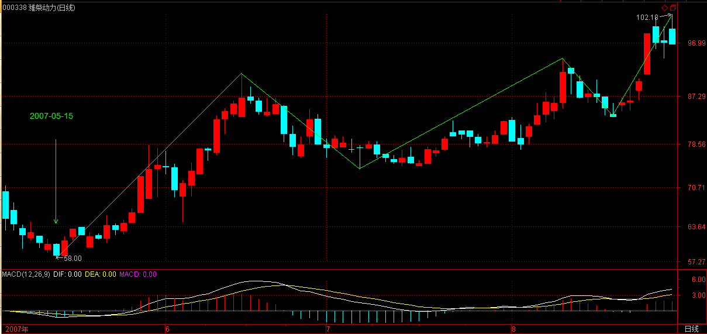
搞死庄家，首先对其资金面、来路等等方面有充分的了解。那些光有几个钱，靠收买了个把刺史、郡守就蚁假猫威的暴发户，是最该收拾、也最容易收拾的。
一般来说，资金上的弱点是攻击的最好前提。当然，资金没什么弱点的，也可以攻击，特别是那些水平不高的新庄家。在市场上，新人新猪肉，被吃是天经地义的。还有一种，就是刚成功了一把正在G点上G着的，这种是绝佳的猎杀对象。
当然，有些老狐狸，也是可以攻击的，但一旦介入，就要准备好长期作战。所以，除非有特别的理由或特别没事干，要找点乐，否则，一般不和老狐狸们玩。但实际上，本ID经常不遵守这个所谓的一般。
晕，回头一看，这梦话也说得老长了，下次再继续说吧。
(2007-08-30 16:05:43)
漂亮50歇菜是好事还是坏事，如果昨天早上还没看明白，那还是可以原谅的；看了本ID昨天下午的“其他个股，借着漂亮50休息而风起云涌一把，这也是天经地义的事情。”还不明白，那最好的归宿就是孔男人一把；如果到了今天还不明白，大概连孔男人都对你绝望了。
还你漂漂拳之风再起时，什么风？二、三线股之风，让指数见鬼去，重开上半年二、三线股走势之风。还你漂漂拳，将二、三线股的丑八怪打出一个个大可面首的成熟爷们，这就是还你漂漂拳之风再起时。
什么叫一吻高潮？看看600635、000998、000938、000099、600578、000915等等，哪个不是吻得万草狂舞、风沙走石、天昏地暗、日月无光的？
【韶山映山红】600635大众公用。】
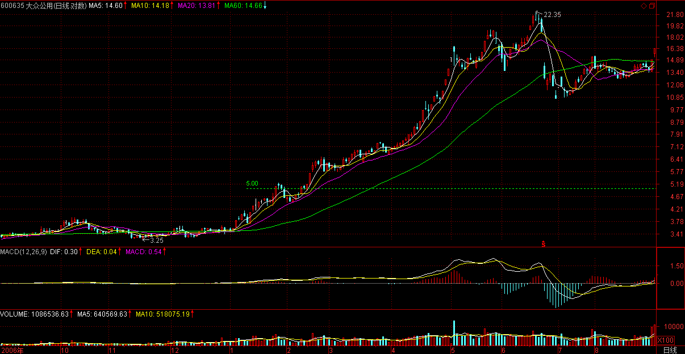
【韶山映山红】000998隆平高科。】
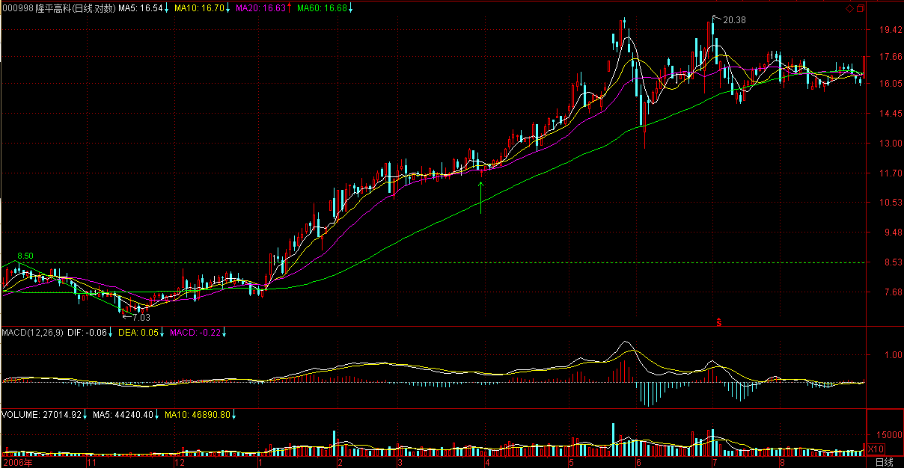
【韶山映山红】000938紫光股份。】
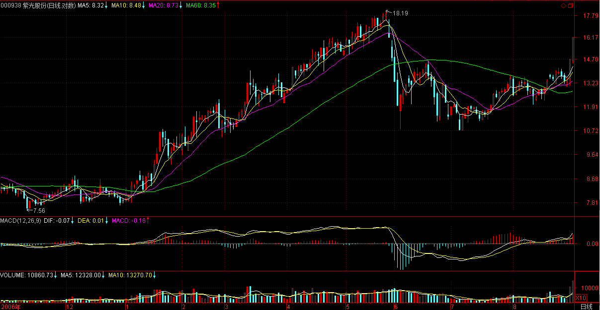
【韶山映山红】000099中信海直。】
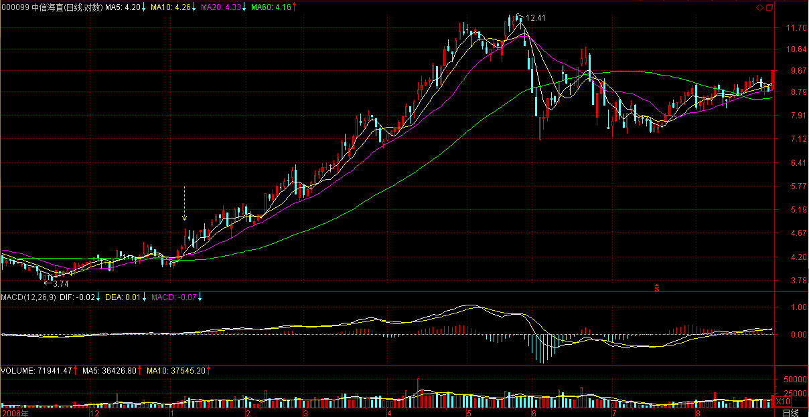
【韶山映山红】600578京能热电，2013-10-10变更为京能电力。】
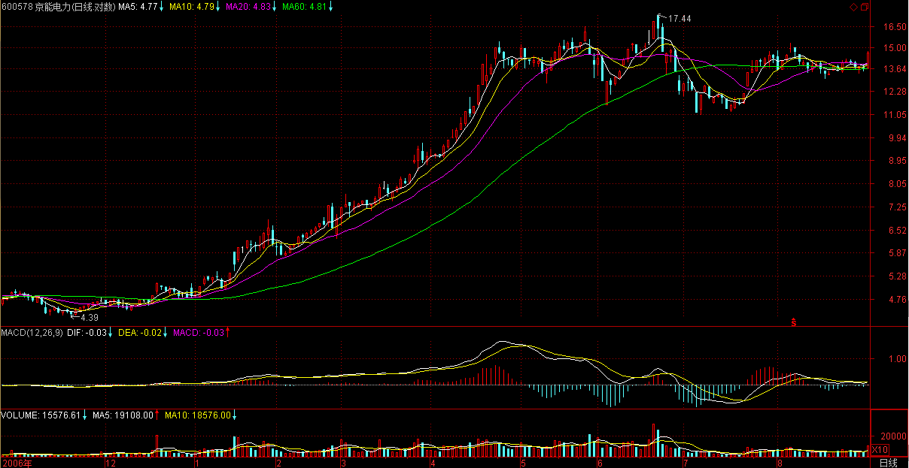
【韶山映山红】000915山大华特。】
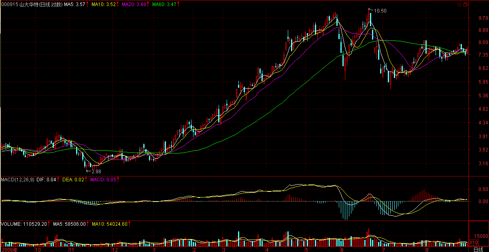
就算最近开始狂动的600008，在8月20前的那一吻，还不够万草狂舞、风沙走石、天昏地暗、日月无光？
【韶山映山红】600008首创股份。】
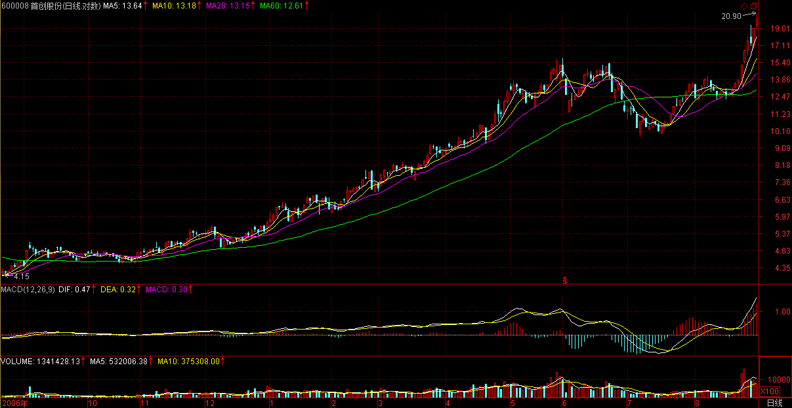
你去看看今天涨停的股票，有多少是一吻而万草狂舞、风沙走石、天昏地暗、日月无光的？还记得几天前本ID再次强调吻的重要，难道吻都要别人代替？
以上只是技术上的一些小技巧，以后不再说了，有缘得之，爱谁谁去。
现在，初步回到本ID希望编排的剧本，这剧本在这一章节只有一句话：指数耷拉，二三雄起。指数耷拉，将使得一些极为迫切解决的矛盾不会一下被激化，而二三雄起，又可以消耗目前一些多余的能量。记得本ID在8月13日的话吗？原文：“个股方面，一、二线成分股的行情依然会延续，但要注意升幅过大后的短线震荡风险，而当业绩风险释放后，二、三线题材股会找到重新活跃的动力。”
现在，中期业绩的公布已经尾声，该发生的就需要发生。而本ID为什么前几天狂批“快男”，就是他们的节奏有打乱本ID剧本的可能，对这种拿着别人钱乱搞之人，不教训一下怎么行？
本ID的持有结构十分明确，就是中字头和那10几只谁都知道的二、三线股，中字头，如中铝者不愿意休息就让他休息，顺便差价一番，这没什么不对的。
【韶山映山红】601600中国铝业。】
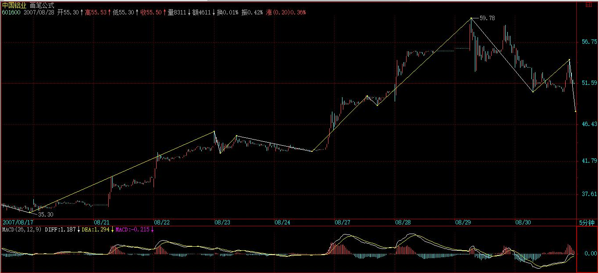
当然，站在中长线角度，这些中字头的潜力远远没有发挥出来，本ID乐意和他们海枯石烂，但现在，本ID觉得4N9一下二、三线股，难道不是一件很浪漫的事？
大环境，本ID已经说得很清楚，就是警报声声，而且还一度几乎擦枪走火，这时候该干什么，所有对市场的长期有珍惜的人，都应该明白。市场的做多能力没地方宣泄，就找地方让他们宣泄，而不能影响整个大局，这就是目前市场参与者应该有的共识。
当然，市场是所有人的，有些人，拿着别人的钱乱搞，最终搞死市场，这种人一定要受到市场的严重声讨。现在，这伙人好象新钱有点少了，气焰大概也消停一些了，那么就反省去吧。
短线技术上，没什么可说的，就是还是昨天说的5分钟震荡，这就很好。
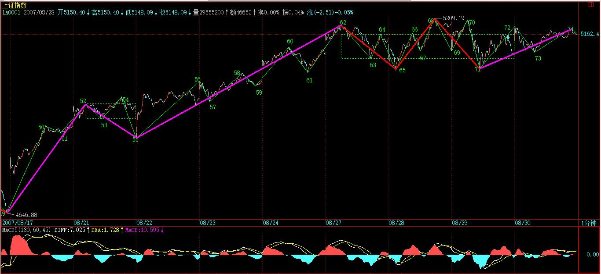
明天周末、又是月线收盘，任何温和的走势，都是本ID可以接受的。周末，究竟会有什么？还是先看看现在都有什么了，最近这温柔的一刀包括：
一、风险提示；二、停发基金；三、直通车；四、6000亿等等。
那么，不温柔的一刀呢？
本ID可以明确地说，那市场的做多冲动引到二、三线股，只是一种最好的选择，但不是一个绝对安全的选择。与其让市场在漂亮50上继续冲动，还不如玩一把还你漂漂拳之风再起时。
请注意，没有任何股票值得追高，而且目前政策面上依然风云多变，更没有追高的必要。
今天既然风再起时了，可以回答问题、还你漂漂拳到5点。
【韶山映山红】73-74为什么一段而不三段？★以后研究。】
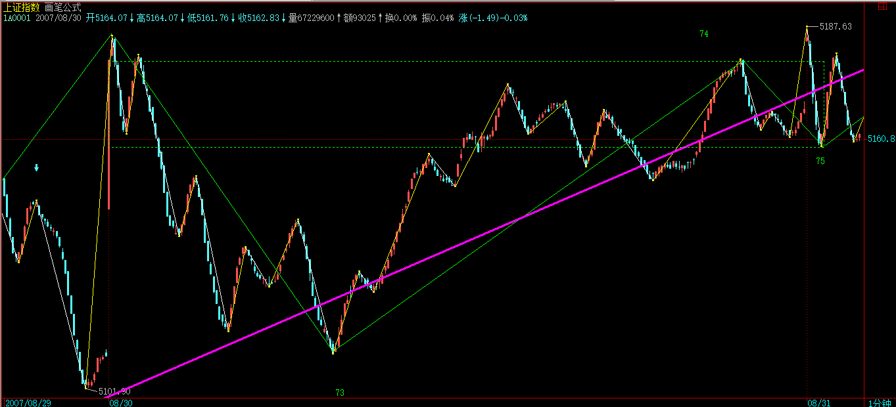
【韶山映山红】亿安科技作手的博客：当年这个图在73-74这个位置最后能理解为一段的几乎没有，因为网络上盛传所谓的5笔必成一段谬论，73-74真正不是一段的原因就是本ID上面所述，本ID上一个放大版本的73-74 】
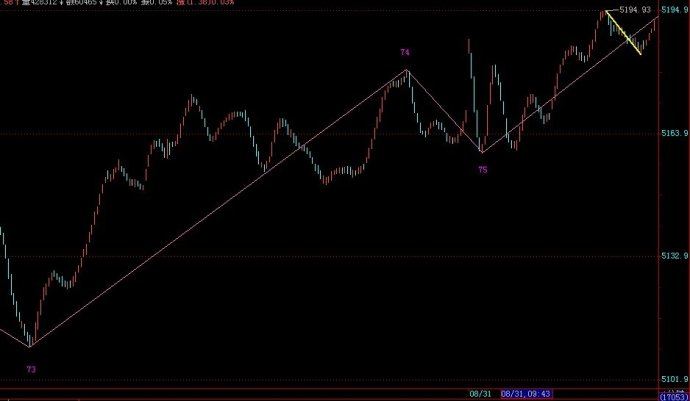
【韶山映山红】亿安科技作手的博客：注意第一个绿箭头和第二个红箭头处是标准的5笔，但最后未处理成段，为什么，因为压根就没有5笔必成段一说，这都是不学无术的右派自己YY出来的，本ID告诉各位原因，请看：】
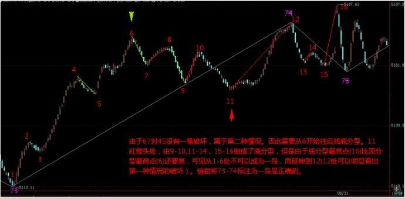
【韶山映山红】亿安科技作手的博客：看到下面有很多朋友问74-75刚才本ID拿到网友给本ID的当时的放大版图（因为前期一直没注意后面的74-75，刚才拿到放大版的图，这样就清晰多了，但注意规则没有改变，按照本ID的规则线段划分是百分之百可以唯一的）：】
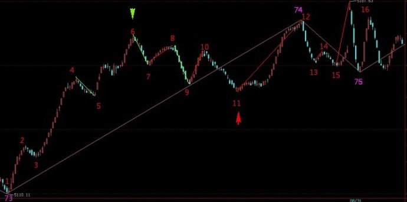
【韶山映山红】亿安科技作手的博客：74开始线段破坏第一种情况后延伸出3笔，后向15-16上笔直接新高但最后先破向上笔的低点15，所以原向下段没有结束，这也和本ID上面开篇讲的一种情况符合，请大家好好参阅.所以74-75一段成立的问题本ID也帮各位解答了。】
http://blog.sina.com.cn/s/blog_714c5fc50100oi83.html
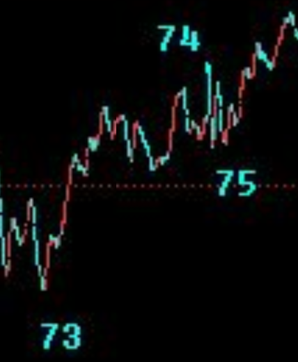
[匿名] 白玉兰 2007-08-30 16:12:12
妹妹辛苦了！明天再努力一下，我的915也赚了。到今天为止，今年收益不错245％。再次感谢妹妹。
==
最终都只能靠自己，别人最多就是指手画脚一番，都是依靠不得的。
2007-8-30 16:14
老实念佛 2007-08-30 16:15:09
老大，在分型上：相邻两根K线，只要有一端数值相同，就必定是包含关系？相邻两根K线的高低点完全相同是不是可以不算是包含？或者包含只能是一根‘完全’在另一根的范围之内，即高点小于高点，低点大于低点？请明示，谢谢！
==
只要有一端相同，那必然是包含，两端相同那更是了，所以如果不是包含关系的，都必然不需要考虑相等关系。
2007-8-30 16:18
fzznl 2007-08-30 16:15:33
>> 中字头，如中铝者不愿意休息就让他休息，顺便差价一番，这没什么不对的。
是说小铝不听话，被缠姐教训了吗？唉，动作太慢，没跑掉啊
【韶山映山红】601600中国铝业。】
==
其实这股票昨天走势和002149 60那天一样，回想一下就明白了。
【韶山映山红】600139绵阳高新，2007-04-11变更为*ST绵高，2009-06-04变更为西部资源。】
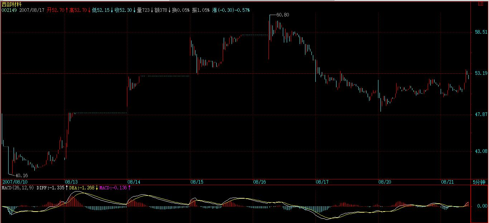
错过了也不怕，这股票中长线肯定还有很大空间，短线休息，上下震荡的机会还是很多的。
2007-8-30 16:22
[匿名] 天眼 2007-08-30 16:09:07
老大好!五分钟中枢的区间可以看成三个1f走势类型的重叠部份,把5f中枢分解成三个1f走势类型时有那些原则?
==
请先把逻辑关系搞清楚，是3个有重叠的1分钟走势类型形成5分钟中枢，如果你不先分辨出那3个1分钟走势类型，你怎么知道这看的是5分钟中枢？【韶山映山红】先确定低级别的走势，包括类型和起止点。高级别的走势可以验证低级别的分析，但递归的方向是从低到高。】
2007-8-30 16:29
向标准走近 2007-08-30 16:32:47
数学妹妹能说说上海B股不，最近好惨啊，都没了方向了！
==
怎么没方向，那些线不是正寻求吻之中？就看能否吻成功了。
2007-8-30 16:37
[匿名] 小方 2007-08-30 16:17:17
请问博主：能否把你持有的中字头的再示一下，，我们好学习学习。。。
[匿名] 小方 2007-08-30 16:14:12
期待您的回复！！
==
这里的人都知道，中石头、【韶山映山红】600028中国石化】李军人、【韶山映山红】601111中国国航】中铝、【韶山映山红】601600中国铝业】中人兽【韶山映山红】601628中国人寿】之类的，没什么可说的。
2007-8-30 16:39
[匿名] July 2007-08-30 16:23:01
mm,学了线断后，我想用线段的类中枢对线段中的笔背驰进行操作，可是好像不是很灵光。请问mm这是为什么？我觉得从逻辑角度讲，这应该也是可行的阿？【韶山映山红】1分钟中枢就是线段中枢，这里说的“线段的类中枢”，缠师在69课提到了这个名词，也就是我们现在所说的笔中枢。】
==
你在太空中交易？不需要手续费、印花税？【韶山映山红】缠师只提到交易成本的问题，没有说笔中枢的可靠性、稳定性等问题。】
最小用1分钟以上级别的，太小级别没意义。
2007-8-30 16:41
[匿名] 新浪网友 2007-08-30 16:39:39
我学你的理论用在期货上咋感到中枢不好找啊,老是跳空
==
跳空不该变任何事情，如果这缺口在线段里，还是线段；在笔里，还是笔。【韶山映山红】所谓顺势包含，逆势独立。与笔同向的跳空缺口相当于笔的延续，包含在笔里，还是笔。与笔反向的跳空缺口单独成笔。单独成笔的跳空缺口，与线段同向的包含在线段里，还是线段。单独成笔的跳空缺口，与线段反向的跳空缺口单独成段。★】
2007-8-30 16:42
[匿名] 新浪网友 2007-08-30 16:39:52
老大.请问三买后的向上段和离开中枢的向上段比较盘整背驰,有时候回落形成中枢,有时候只是稍稍回落又继续涨不形成中枢,有办法预判吗?谢谢
==
那就是那段根本没走完，你不能把没走完的和走完的比。【韶山映山红】走完没走完，要看线段内部结构的背驰判断。只是稍稍回落又继续涨、不形成中枢的，如果线段划分正确，背驰判断正确，就是回落的时候遭遇小转大了。】
请复习一下区间套，这方法就是要去避免上面的情况。【韶山映山红】用区间套的方法判断本段是否走完。】
2007-8-30 16:44
[匿名] 吻 2007-08-30 16:44:32
缠jj好！请教：你认为中国的一线城市的房子还能涨到什么时候，都买不起房子，真苦恼啊。
==
听说要40%首付，这一招涉及的利益矛盾太大，能否最终出来，本ID都有点怀疑。中国很多事情，不到最后一秒，不能说100%肯定的。
2007-8-30 16:48
快乐vs菜虫 2007-08-30 16:40:45
缠姐，我由刚才你的回答给出相邻两K线的包含定义：
相邻两K线K1和K2，K1的高点为G1低点为D1,K2的高点为G2低点为D2,若
D1<=D2,G1>=G2则说明K1包含K2
D1>=D2,G1<=G2则说明K2包含K1
另外，课程65当中“第n根K线满足第n根与第n+1根的包含关系，而第n根与第n-1根不是包含关系，那么如果gn>=gn-1，那么称第n-1、n、n+1根K线是向上的；”这段话应该也是有问题的，应该把 "gn>=gn-1改成 "gn>gn-1"。
不知道这样说对吗？
还有例如一只股票开盘就封涨停并且全天没打开过以涨停报收，是否可以把当天所有的K线依次全部合并为一根K线，也就是说当天的走势就可以看成是一个跳空缺口加一根K线？？
==
其实是一个意思，不包含就自然没有相等，但注意，这里包含的相等，指的是绝对相等，而后面的相等，还包含测量相等的情况。【韶山映山红】什么是测量相等？没有查到。看后面的问答，似乎是：指数取整的时候相等就是测量相等，小数点后面的也都相等是绝对相等。】
另外，一字涨停当然可以这样看，所以最开始时就说，这只形成最小级别的中枢。而站在用分型开始构造最小级别中枢的角度，那就连分型都算不上，更不说笔了。【韶山映山红】过去所说的一字板形成最小级别的中枢，在分型、笔、线段的体系中不成立。日线级别的一字板也只是一根普通K线。】
2007-8-30 17:00
[匿名] 吻 2007-08-30 16:52:17
缠jj，还有一个问题，上海的一分钟图上，为什么62-63这一线段段，不能划分成三线段呢？好像符合线段的划分条件。期待回复！！谢谢！！
==
这昨天已经说了，请再去研究第二种情况的定义。
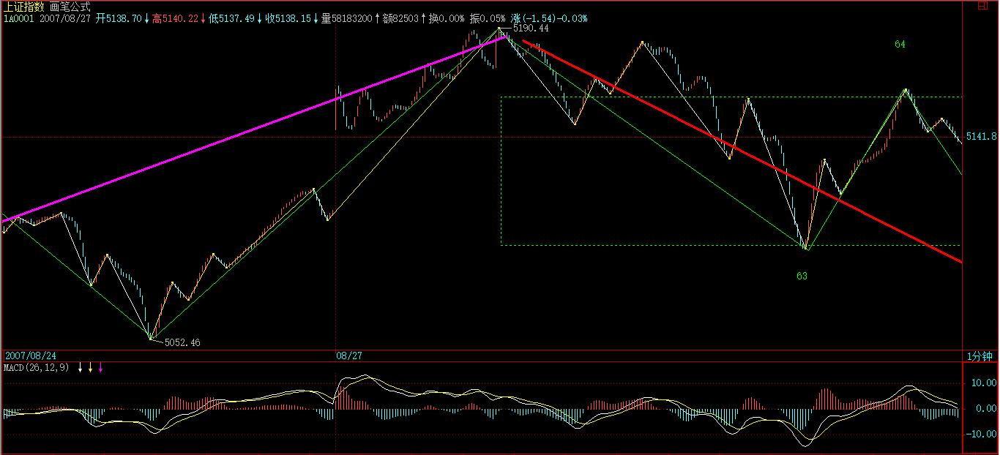
2007-8-30 17:01
[匿名] 50年以前 2007-08-30 16:52:50
刚才看老师没提中行，老师是不是已经因为次级债的问题把它给扔了
==
没必要把所有都列出来吧？查户口？这样，本ID也没说联通。
2007-8-30 17:02
逍遥往 2007-08-30 16:53:05
疑惑：刚才姐姐回答问题时说到“等于”时属于包含关系，是否跟65课里面的“假设，第n根K线满足第n根与第n+1根的包含关系，而第n根与第n-1根不是包含关系，那么如果gn>=gn-1，那么称第n-1、n、n+1根K线是向上的；如果dn<=dn-1，那么称第n-1、n、n+1根K线是向下的。”矛盾
==
>=，其实应该读作不小于，当然包括等于的情况，但不是说一定有这种情况，既然不包含是前提，那自然就没有这种情况，这有什么矛盾的？
另外，必须注意，包含关系中的相等，必须是绝对相等，也就是说必须在软件上最后一位小数都相等。一般来说，很少出现这种情况。【韶山映山红】指数取整的时候相等就是测量相等。小数点后面的也都相等是绝对相等。指数的绝对相等不常见，股票就没有这个问题了。】
2007-8-30 17:06
对不起，已经超时了，还有事情。
先下，再见。
2007-8-30 17:08
(2007-08-30 21:27:50)
白话文是否适合写诗，大概等白话文被消灭后还是一个问题。今天偶然再看到闻一多的《死水》，如以前所看，依然没感觉。白话文的诗，在现在那些所谓的诗人手里，继续小圈子地湿下去。
古代没有诗人，古代，诗只是每个人一种表达的习惯。有人可能反驳这种说法，例如，没读过书的人怎么会写诗。事实上，古代的民歌，就是最好的诗，都来自没有读过书的人。
什么是诗？只有心灵彻底明澈时，才有诗。白话也会有可诗的地方，但一定不是如闻一多之流所写的。这类所谓的诗，最多属于CCTV晚会上朗诵文稿中的上者。
对于白话文写的诗，对本ID有一个用处，就是作为艺术歌曲的歌词去谱曲，如此而已。
无聊间，用“死水”胡诌七律一首。
死水
缠中说禅
一潭死水一乌瞳
万世深幽对碧穹
偶有涟漪明月下
非留光影乱云中
由它天上阴晴易
任尔人间污净充
终古依然孤傲色
乾坤刹那摄无穷
附录
死水
闻一多
这是一沟绝望的死水，
清风吹不起半点漪沦。
不如多扔些破铜烂铁，
爽性泼你的剩菜残羹。
也许铜的要绿成翡翠，
铁罐上绣出几瓣桃花；
在让油腻织一层罗绮，
霉菌给他蒸出些云霞。
让死水酵成一沟绿酒，
漂满了珍珠似的白沫；
小珠们笑声变成大珠，
又被偷酒的花蚊咬破。
那么一沟绝望的死水，
也就夸得上几分鲜明。
如果青蛙耐不住寂寞，
又算死水叫出了歌声。
这是一沟绝望的死水，
这里断不是美的所在，
不如让给丑恶来开垦，
看他造出个什么世界。
(2007-08-31 16:04:19)
目前的状况，已经反复说得很清楚。目前已经给出比较严重泡沫的定性，这可不是本ID说的，至于谁说的，当然也不可能在这里说。在这样一个明确定性的大背景下，任何的行走，都如同在刀锋上的游戏。
指数耷拉、二三雄起，这是目前现实状况下最可行的走法，这剧本显然已经得到足够多的共识。这样，至少能延缓指数上涨的速度，而且能使得受益面能尽可能的广。为什么？因为目前的强劲做多欲望必须被消耗掉，这欲望，来自人的贪嗔痴疑慢共业，如此之强大，必须在疯狂中最终燃烧尽，才有回头的可能。当然，还有一种最干脆的做法，就是再530一番，这一把刀一直悬在头上，铺在脚下。但贪嗔痴疑慢共业如此强大，能否不触及那把刀，又能让贪嗔痴疑慢共业尽情疯狂，这就是目前剧本中最激动人心的篇章。
今天周末的行情，在下午，明显受到对周末消息面的担心而产生震荡，但最终的震荡都在前几天最高位上受到支持，这就充分显示目前做多能量需要消耗的急迫性。如果周末没有任何足够分量的消息，那么下周，这能量将有一个大的爆发。
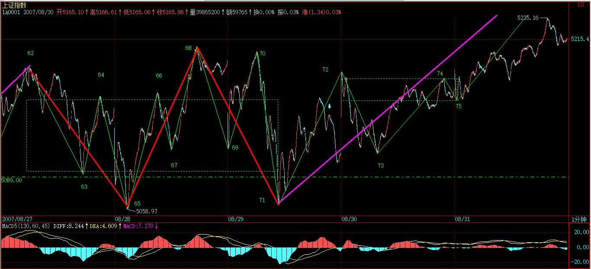
再一次用一个最直白的话把这N天反复说的话再说一次：打击快男，使得疯狂中的可获利面极大扩大，一句最狠的话就是，就算疯狂过后是无限的地狱，但多数人的疯狂总比单纯漂亮50的疯狂来得更公平、更有趣一些。
下周，绝不排除出现群魔乱舞的状况，如果能尽量减少指数涨幅而带动更大面积的疯狂，这就是最好的状态了。3/4线还有足够远的空间，而且加上突破后的顺势，有足够的空间去完成这种疯狂。但必须明确注意，这疯狂的代价，与刀锋相关。
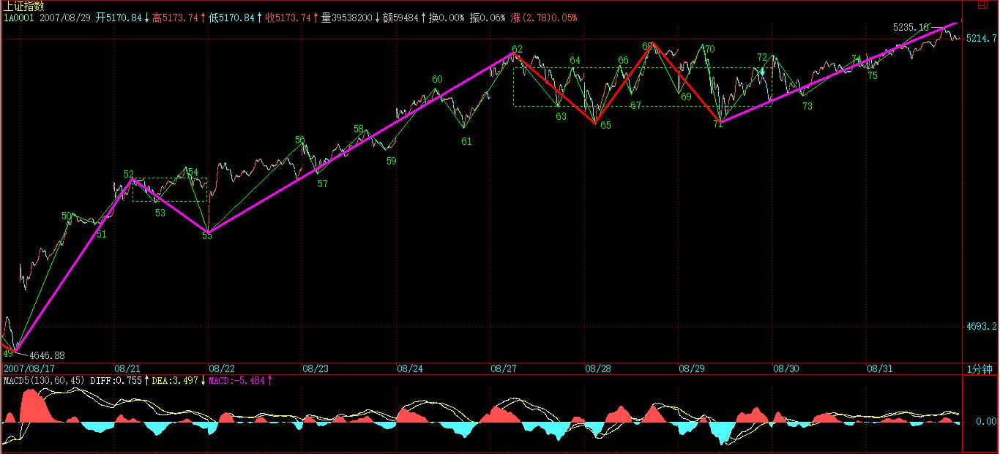
既然选择了在刀锋上行走，无论市场还是个人，都要明确知道这行走的代价。其实，没有什么是不可以的，但必须知道代价以及能够去承受这代价。那些又要玩刀又怕被刀杀着的，回家玩豆腐吧。
个股方面，没什么可说的，该说的，在8月13日已经全说了：“个股方面，一、二线成分股的行情依然会延续，但要注意升幅过大后的短线震荡风险，而当业绩风险释放后，二、三线题材股会找到重新活跃的动力。”
至于一直有人说本ID原来那10几只股票基本面很差，纯粹垃圾股的，最近的看法也应该有所改变了。本ID从来不乱买股票，如果乱买，那么整个股市中最和VC与PE相关的两只股票600635、【韶山映山红】600635大众公用】000938，【韶山映山红】000938紫光股份】为什么都在本ID的组合里？本ID那10几只股票中，业绩暴增百分之几百、甚至一千的，难道还少？当然，这只是冰山一角，就像000938，谁告诉你就是PE、VC这点事情？
长线介入与短线介入是根本不一回事情，本ID已经把最好的方法告诉各位了，就是利用中短走势把长线成本降到0，然后长线持有，对于大资金，这基本是唯一可行又效率最高的方法。如果是小资金，那根本不需要这样，你忙得过来，技术又可行，那么天天都可以419一把，关键是你能否有这时间、通道与技术。
但小资金弄好了，最终都要大资金的，所以最终都要走这条道路。
没有成本，本质上就是没有占用资金，这样才有安心持股的可能以及效率。那些，连几个月都熬不住的，根本就不适宜做股票。例如，000938之类确实很无聊，但如果你0成本长线持有了，那就不无聊了。这股票历史天价是100元，一个清华的股票，大牛市竟然可以不创历史新高，你相信吗？当然，这可能需要1年、2年、N年，但对于0成本后，就无所谓了。而且，清华企业的整合是必须和必然的，这里的空间有多少，本ID不想去预测，没意义。总之，本ID 0成本地和他海枯石烂了。那些天天想着涨停短线的，还是去顶豆腐比较有意义。
其实，本ID还有一只独自去偷欢的股票，比000938更无聊，就是000021，原来的深科技，7元时介入的，现在已经三个季度了，除了已经把成本降为0，这股票没有任何值得炫耀的地方，但本ID也和他缘定三生了。
【韶山映山红】000021深科技A，2006.10.17变更为长城开发，2015.01.05变更为深科技。】
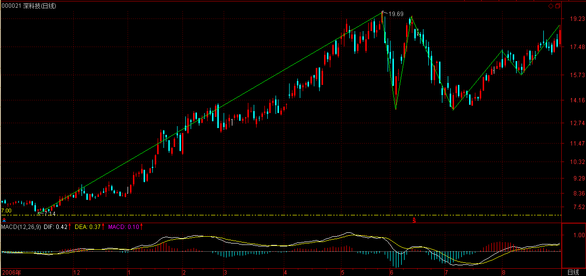
对不起，本ID只会把股票变0成本后海枯石烂地持有，除此之外，对大资金，本ID不知道任何在大牛市里更好的操作方法。当然，在一个大级别的回调中，本ID也会弄一个短差去增加筹码数，这大概就是本ID唯一能再干的活了。
周末，腐败比股票可爱。
散去吧。
(2007-09-01 11:15:02)
二十二
风吹过的地方，不一定没有葡萄皮，更不一定没有曾被葡萄皮葡萄皮一把的他。
巨大的风车阵讲述着古老的故事，与伊比利亚无关。
流动的道路，穿没在死亡的沙海，天上幻着云彩，天外葬着星骸。
世界如世界般牢笼，世界如世界般平庸，世界如世界般乱哄哄。
世界的体液世界地喷发，日月星辰、人神鬼兽。
野合的世界群交着高潮，葡萄生长的地方，葡萄不再生长，风依然吹过。
七棵树的山岭，七座坟的河流，风烟起处，绿水无波。
二十三
窗外，没有风烟的天空，月正中天。
伊比利亚的老人正在亚平宁椭圆形旋转玻璃桌上鏖战。
丁格尔麻质枕头上烟雾缭绕。
那一点红，鬼眼明灭。荧屏里明灭着来自半岛的声影。
“还没睡？国内很晚了吧。”
“布什那孙子不让睡。”
“这次他可下了大赌注、花了大血本。”
“脑子有水呀，那孙子有什么赌注、血本？成了恺撒、不成撒恺。炮灰别人，成就自己的事儿，这孙子早憋不住了。”
“民意支持他。”
“吃了几条热狗脑子都热狗呢？狗屁民意，需求不可以制造？想让你当炮灰，那孙子可以制造一万条理由让你炮灰得高潮迭起、乐此不疲。”
“你太偏激了，这是民主国家，不是一个人说了算的。”
“不主民哪里来民主？民主国家就是国家了你、民主了你，你还高潮迭起、乐此不疲。你爱被那孙子强暴当孙子的孙子就去好了，没人拦你。”
“不说了，我明天还有音乐会，要排练，准备演出。”
“你忙吧。”
耳边，女武神在飞翔；眼前，云蘑菇了天空。
(2007-09-02 11:00:01)
有生必有死，对于一般人来说，这分段生死难免。何谓分段生死，一个最简单的比喻：所有的唯物主义者，都是419的崇拜者。他们相信，生命就是一个419的过程，419就后，就什么都没了。而分段生死，就是N419，这个N可以趋向无穷，当然也可以包括N=1。
生命，就如同面首。因此有情，而有这面首之缘。唯物主义者相信N=1，当然，他们没有任何的证据证明N只能等于1。他们的证据不过是说，人死了，都成了死尸，所以N=1。这种论证，就等于看到一个混乱、惨不忍睹的强暴面首的现场，然后就假定，是男人都要被面首，是面首都要被强暴，被强暴的面首然后失去贞操就是男人唯一的命运。
唯物主义，就是这样一种典型的被强暴恐惧中的面首思维。将生命还原为一大队分子、电子、这子那子活动的，只能是呆子。那不过是生命的表象，生命，当然有超越分子、电子、这子那子的东西。
就算站在纯科学的角度，这种呆子思维也是极端可笑的。一个只能观察分子、电子、这子那子的系统，当然就只能观察分子、电子、这子那子，以此为前提来设定生命的边界，其实依然脱离不了这样的一个假设：观察的结果=观察物。把观察的结果等同于观察物，说到底不过是一种上帝式思维的狂妄自大。将所谓科学的观察研究当成上帝的全知全能，就算用一种极限的观点，认为人类的科学的不断进步可以不断接近真相，那不过是用建立在这样一个狂妄自大的全知全能的假设上：我们的观察结果所有构成的空间中的每一个收敛序列都收敛于一个叫真相的玩意，而每一个叫真相的玩意都能有一个收敛序列去收敛，人类的观察结果、人类的科学空间是完备的。
这种完备性的狂妄自大，不过是对上帝的全能全知的投影。整个西方的科学，本质上不过是基督教意识的世俗化，都和基督教一般，有一个狂妄自大的、全知全能的可笑前提。
这个前提，没有任何人能去证明，科学不是标榜以可证明性为前提吗？但科学的前提恰好是不可证明的。科学就是这样一种怪胎，他标榜的东西是以其反面出现在其预设的前提中的。
对科学前提的追究与批判，就是本着科学所标榜的态度，这叫以子之矛攻子之盾。有人说，科学有用呀，科学可以制造可以把蘑菇种到天上去，然后100万1000万1亿地杀死所有的人，一克的药物就可以杀死60亿的人。确实，科学有这样的用处，这就是人类贪嗔痴疑慢所感的共业。
无论科学能杀死多少人，无论科学能让花朵长出人类的性器；牛尾巴上长出人类的头颅，无论科学还能玩出任何花样，能科学的永远只能是能被科学的。科学的狂妄自大只不过在于，他宣称，他的世界就是世界，他的世界是完备的，能被科学的集合就是世界本身。但科学永远证明不了他自己狂妄自大的科学性，科学永远只能在面首被强暴的哀鸣中自渎。
科学的范围，离不开眼舌口鼻身意，甚至只能是眼舌口鼻身意所对应的粗分部分，面对死亡，科学眼舌口鼻身意地科学到了一具具死尸，然后在这一具具死尸中科学地自渎，在这里，于死亡无所谓从容可言，从容是生命的，而不是死尸的，更不是科学的。
还有一种，如陶渊明般号称“托体同山阿”，但山阿亦有败坏时，人的贪嗔痴疑慢于死后还想不朽，或希望留名千古，或希望托体山阿，都不过是偷心不死。
永垂不朽，都不过是骗人的鬼话。文化、世界、科学、人类，诸如此类，都有败坏之时，有生必有灭，希望托于不朽而不朽，都是痴心妄想。世间哪里有什么不朽的东西？醒醒吧。
死亡？谁去死亡？死亡者是谁？眼舌口鼻身意，你的意识停止了、你的身体腐烂了，你魂飞魄散了，你在哪里？你的眼舌口鼻身意是你吗？你的灵魂是你吗？你死的时候，科学帮不了你、宗教帮不了你、文化帮不了你、面首帮不了你、419帮不了你、金钱帮不了你、世间的一切都帮不了你，你的灵魂帮不了你，狗屁上帝帮不了你，道帮不了你、白日飞升帮不了你，你在哪里？
死亡，就是生命真相的一个大揭露。一切在生时抓住的东西，一旦死亡到来，都不管用了，你什么都抓不住。死亡，赋予生命以意义。你在生命中牵连的一切，在死亡中被意义了。死亡，照亮了生命。没有死亡，生命没有了意义。
但有了意义，并不能使得死亡有了更多的从容。这种意义是外加的，不管你愿意不愿意，死亡就在那里，他吞噬你的一切。
你的一切的叠加是你吗？死亡吞噬了你的一切，但你的一切是你吗？你的一切从来都不是你，他只是你的，而不是你。你的都不是你，你的都不过是你觉得抓住的一切，在死亡中，一切你的、你的一切都被扒光，你的灵魂、你的身体、你的名利、你的文化、你的世界、你的上帝、你的道、你的科学、你的成就、你的宇宙、你的时间、你的一切都被扒光，如幻象般幻化，而你熠熠生辉。
你从来未生，又何来死。你从来从容于生死，生死如幻象般生生灭灭，而你于生死中熠熠生辉，生死流转中不增一分、不减一分，你依然是你。
成佛是你、成魔是你、科学是你、不科学也是你，狂妄是你、自渎是你，你只是你。
你，修证不增，不修不减，你本来佛，不曾迷、更无须悟。这生死中的风情，销魂销骨而依然，你无非是你。
(2007-09-03 08:49:53)
最近，新来的人太多，鱼龙混杂，本ID就入水入泥，再说一下目前市场所处阶段。这些，都在前面反复说过，但为了照顾一般水平的，不妨再明确说一次。
本ID的观点，从来都是一贯的，依照相同的逻辑关系展开：
一、这轮大牛市至少再延续20年，至少再上升3万点以上。这个观点，一直没有改变，包括这大牛市可以划分的三大阶段，已经明确说过。
二、目前的走势处于大牛市第一阶段的泡沫化过程中。由于从低估到回到正常位置的GDP用了2年，上升4点5倍。从纯对称的角度，泡沫化阶段也可以延伸2年，上升4点5倍，也就是在极端情况下，可以到达2万点。但有一点是必然的，就算先到2万点，那么后面泡沫破裂后，必然在回到GDP的位置，也就回到目前以下的位置。
三、泡沫可以自然破裂，也可以人为戳穿，人为戳穿的情况，关系到政策的调控，属于不可系统的风险。面对这种风险，必须要明确，就是这不改变任何长期趋势，最多就是制造一个中线的调整。如果调控相对高明，那么泡沫化阶段可以延续的时间就长点，高度就大点，而且后面的破裂相应的杀伤力就小点，但能否达到这种调控水平，本ID没有任何信心。
四、在泡沫化阶段，就如同在刀锋上行走，既然选择了如此，就只能如此下去，有任何损伤都不能怪任何人，要自我承担。如果没有这心脏，那就退出，也别眼红别人去赚取泡沫化中的超高回报。在泡沫化阶段，需要更好的心态、更高的技术。
五、有些股票是值得持有20年，等待整个牛市结束才抛出的，一旦选择了这种股票，就是天荒地老、海枯石烂地持有，但可以根据中短线的波动去把成本降低、在0成本后再增加持有的筹码。站在大牛市的长线角度，泡沫的破裂，也就是提供一个减低成本、增加筹码的大机会，如果有这技术、心态，就要好好把握，如果没有，就坚定信念，义无返顾地持有20年。
下面是半年报中业绩最好的前10名：
每股收益前十名
证券代码 证券简称 每股收益(元）
600137 *ST浪莎 4.75
000338 潍柴动力 1.87
000623 吉林敖东 1.71
600497 驰宏锌锗 1.70
600109 成都建投 1.50
600993 马应龙 1.45
600432 吉恩镍业 1.43
600030 中信证券 1.41
000592 S*ST昌源 1.34
600677 航天通信 1.29
*ST浪莎只是重组而来的利润，没什么实质意义，因此实质第一名的是潍柴动力，也就是本ID要海枯石烂的10来20只股票中的一只，另外一个吉恩镍业也在十名之内。由此可见，说本ID的股票都是垃圾股的，就是胡说八道。
本ID股票的基本面，过N年以后再评论吧，现在，你又能看到什么？
[匿名] 不想飞
[匿名] 新浪网友
匿名] 不想飞
不想飞学长:600777可以守一下吗?谢谢!
＝＝＝＝
可守，问题不大。
2007-9-3 10:46
[匿名] 不想飞
[匿名] 新浪网友
不想飞学长:600569可以再坚持吗?谢谢!
＝＝＝＝
看３０分图，一个主升段上去MACD黄白线零轴上方慢慢的回来，再盘一两个小红柱子块且K线创新高后一般会小调，做短差按这样做，在牛市只这一招这管用的。
2007-9-3 10:59
[匿名] 不想飞
匿名] 新浪网友
不想飞老师：今天有点现金，不知可否进点股票，请指点
＝＝＝＝＝
现金留着，别进了。
2007-9-3 11:08
[匿名] 不想飞
匿名] 天线宝宝
夜雨没来，烦请不想飞学长帮我看看600716和000835，多谢！
＝＝＝＝
835短线上有要求适当的调整，时间就这一两天，短线可适当的减点仓位。
716反弹要是冲不过9.46短线上也可减仓。
2007-9-3 11:30
[匿名] 不想飞
[匿名] 新浪网友
不想飞989还玩吗？？
＝＝＝＝＝
有玩啊，在坐桥子呢！
2007-9-3 11:38
(2007-09-03 15:38:43)
去广东，总能学点古灵精怪的中文，例如本文题目。这句话的意思，用来要求现在的市场参与者，是最恰当不过了。
今天的大盘，如上周五所论，周末没有任何足够分量的消息，因此做多能量如期爆发。
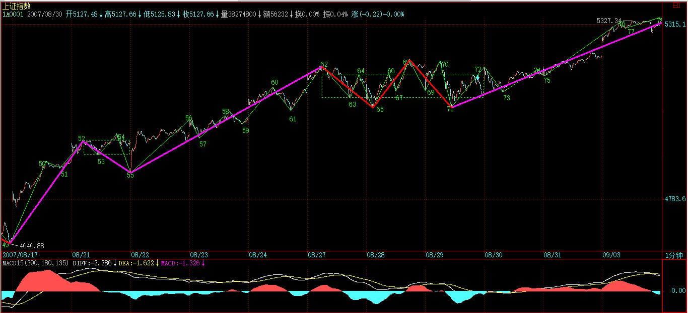
但今天有一个有趣的现象，就是大盘在5330点下徘徊许久，就是不敢上去，为什么？因为4330点上曾留下的记忆依然太过深刻。【韶山映山红】530留下的记忆。】
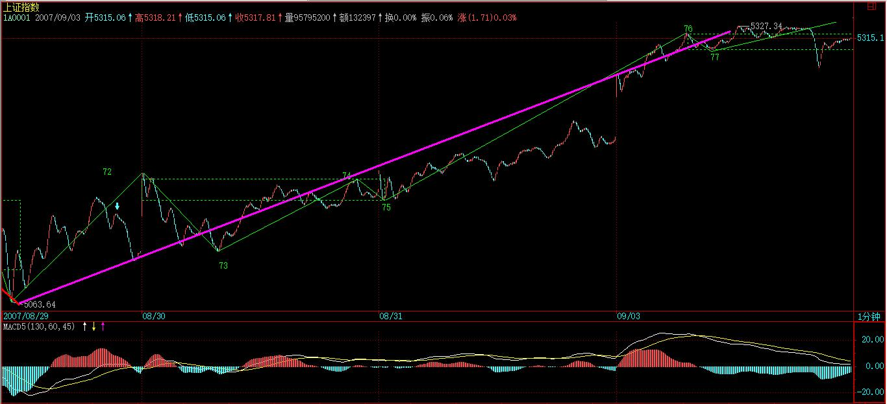
现在，每天都等于一个对赌，就是赌当晚没有特别的消息。最重要的问题是，现在消息决策的保密程度，已经超过一般人的想象，否则，529怎么可能是最高收盘？因此，市场能量依然强劲与对消息面突发性的担忧，构成目前走势的最大一对矛盾。
在这种情况下，就要发扬“吃得咸鱼抵得渴”的精神，要干就狠干，干到消息出为止，出真家伙时，砸起来，看谁狠了。就算是530，早上大把个股还有红盘的时候，关键是该砸的时候决不手软，这样就有继续疯狂的资格，否则，就退出观望吧。
疯狂是需要资格的，没有这素质，没有这技术，就别疯狂。地球很危险，回火星去吧。而目前的疯狂，已经完全按照剧本来，就是二、三线狂舞。有人叫嚣宁愿蓝筹泡沫，也不让二、三动弹，是典型的脑子有水的表现，现实已经足够严厉地教训这些人了。
纯技术的角度，今天的缺口是引发短线震荡的技术隐患，因此，这缺口的技术意义必须被短线所重视。
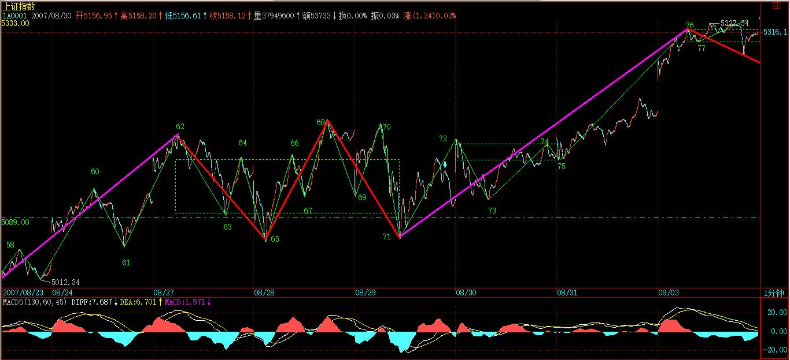
个股方面，可以充分关注技术走势的意义。用本ID有的个股为例子说明：
第一类，如600636，属于最弱的股票，还没有重新站在半年线，这种股票的任务就是先站住半年线，然后再展开。具体到该个股，基本面上不存在任何问题，只是里面的人太杂。
【韶山映山红】600636三爱富，*ST爱富。】
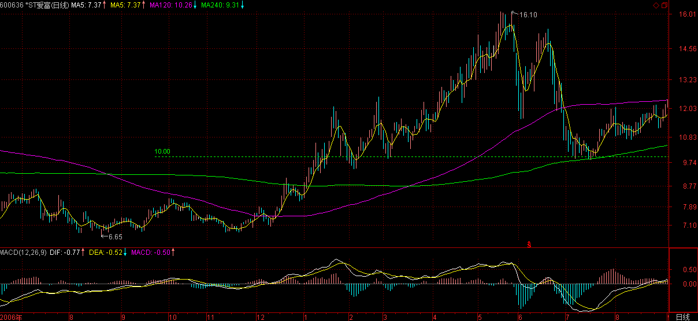
第二类、如600737，前几天刚突破530点后的第一个反弹高位，然后回调，这对于其他股票有同样的意义，这类股票的任务就是通过震荡站稳该位置，然后才会去挑战530的高位。
【韶山映山红】600737中粮屯河。2017-02-17变更为中粮糖业。】
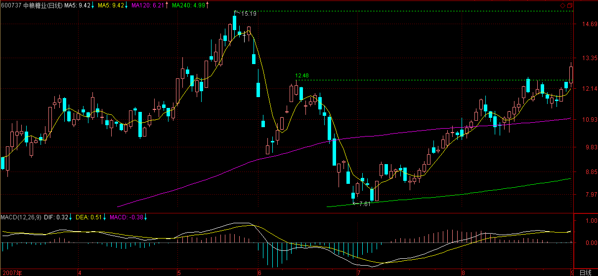
第三类，如000938，突破530高位后出现震荡，这都是最正常的。这类股票，短线能否继续展开行情，关键就是这530高位能否在震荡后站稳。
【韶山映山红】000938紫光股份。】
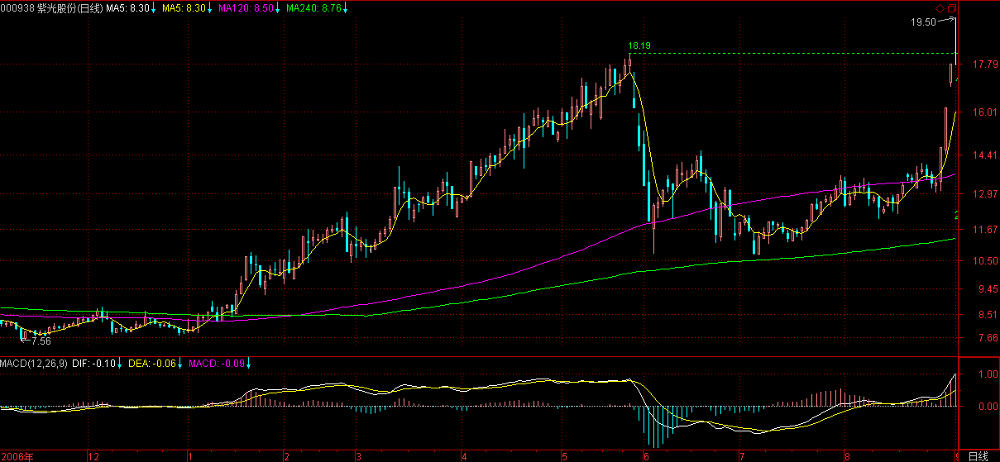
对于补涨的二、三线股票，无非就是这三类，因此可以根据具体的情况，进行相应的短线处理，如果看不明白或没时间短线的，就看5日或5周线进出，这是中短线操作的最懒惰方法了。一般出现相应阻力的震荡，可以在冲高时先退出，下来再回补，用中枢震荡的方法，如果没这判断与技术，就算了。
另外，除非你技术特别过关，否则不建议目前频繁买卖，因为谁都不能保证你今天买的，不会在晚上就碰到一个恶劣的消息，对于心态、技术特别好的，当然无所谓，真出消息，一刀下去千了百了，但一般人可没这心态。
一定要注意，长线介入，一定是在长线买点，如果在一个短线买点介入要持有长线，是绝对地违反本ID的理论的。短线买点的介入就只意味着短线的操作，除非你有最坚强的意志，任何牢底都可以坐穿，否则，就别玩这游戏了。
本ID说的话就是话，例如，现在大盘的走势，是本ID可以接受的，但如果大盘快速突破3/4线后继续快速上涨去构造多头陷阱，那么就算没有政策，本ID也绝对不客气。这几天的中铝只是一个演习，中铝这次的演习，目的完全达到，使得二、三线的切换全面成功，从明天开始，爱谁谁去。
下午、晚上都给PE了，没办法，先下，再见。
本课目录
教你炒股票75：逗庄家玩的一些杂史1还你漂漂拳之风再起时七律：死水刀锋上的行走那一夜，他的体液喷了我一身（二十二、二十三）教你打坐6：于死亡而从容目前市场所处阶段吃得咸鱼抵得渴